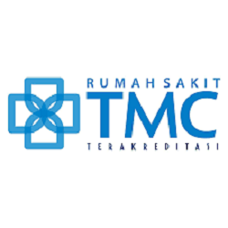
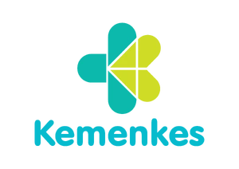

Mitra Kami
Kami bekerja sama dengan berbagai institusi kesehatan dan komunitas untuk memperluas dampak positif kami




Menghubungkan hati yang ingin memberi dengan mereka yang membutuhkan sejak 2025
TasikDonor lahir dari keprihatinan akan kurangnya kesadaran masyarakat tentang pentingnya donor darah dan kesulitan dalam menemukan pendonor saat dibutuhkan. Platform ini dibangun untuk menjembatani kebutuhan tersebut.
Menjadi platform terdepan dalam menghubungkan pendonor darah dengan penerima di wilayah Tasikmalaya dan sekitarnya, serta meningkatkan kesadaran masyarakat akan pentingnya donor darah.
Dibalik layar TasikDonor ada tim yang berdedikasi untuk memastikan platform ini berjalan dengan baik
Founder & Medical Advisor
Dokter spesialis dengan pengalaman 15 tahun di bidang transfusi darah.
Operational Manager
Berkecimpung di dunia donor darah sejak 2015 sebagai relawan PMI.
Tech Lead
Pengembang web dengan passion di bidang kesehatan masyarakat.
Community Manager
Aktif mengorganisir event donor darah sejak kuliah tahun 2018 sampai sekarang.
Kami bekerja sama dengan berbagai institusi kesehatan dan komunitas untuk memperluas dampak positif kami
Testimoni dari mereka yang telah menggunakan layanan TasikDonor
Baik sebagai pendonor, relawan, atau mitra, kontribusi Anda sangat berarti untuk menyelamatkan nyawa.